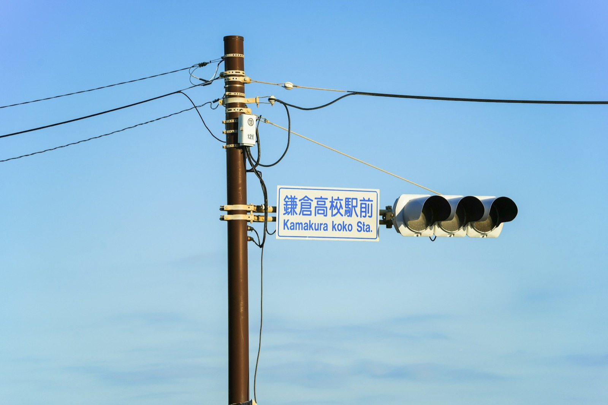

Building Facade Cleaning
Professional exterior cleaning for high-rise buildings, commercial properties, and residential complexes, without scaffolding or rope access.
Learn MoreServices
Clear signage and safer roads, reached without lane closures.

Keep traffic signs, street lights, and public infrastructure clean and visible with efficient drone cleaning for hard-to-reach roadside installations.
Signs, gantries, and lighting assets along the route are mapped and prioritized.
Cleaning windows are scheduled to minimize impact on traffic flow.
Each asset is cleaned in sequence along the planned route.
A final check confirms signage is clear and fully visible.
Professional exterior cleaning for high-rise buildings, commercial properties, and residential complexes, without scaffolding or rope access.
Learn MoreMaintain peak energy efficiency with regular solar panel cleaning. Specialized drones remove dust, sand, and debris without damaging delicate photovoltaic surfaces.
Learn MoreComprehensive cleaning for industrial facilities, warehouses, and manufacturing plants, removing grime, dust, and pollutants from large exterior surfaces.
Learn More